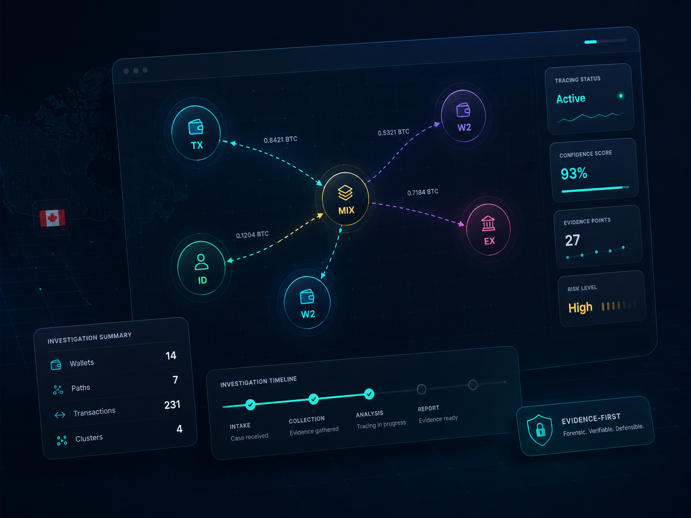
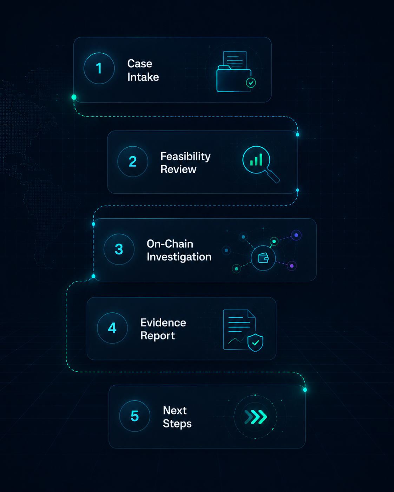

⌁
Transaction Tracing
We analyze wallet addresses, transaction hashes, fund movement, exchange exposure, and on-chain patterns where technically possible.
Ontario Refunds helps victims of online financial fraud map crypto transactions, organize evidence, and understand realistic recovery options. No false promises. Evidence-first analysis.

We do not reverse blockchain transactions or guarantee recovery. We trace, document, and guide.
Wallets, transaction hashes, exchanges, bridges, mixers, and suspicious fund movement.
Structured documentation for victims, institutions, counsel, and reporting workflows.
10-40 West Wilmot St., Richmond Hill, ON L4B 1H8.
A clear forensic workflow for people who lost funds to online scams, fake investment platforms, wallet drains, phishing, or fraudulent brokers.
We analyze wallet addresses, transaction hashes, fund movement, exchange exposure, and on-chain patterns where technically possible.
We map connected wallets, suspicious clusters, possible service touchpoints, bridges, mixers, and destination patterns.
You receive a structured report with transaction paths, timeline, wallet details, findings, and recommended documentation steps.
We help you understand practical reporting, legal, institutional, and documentation options based on the case facts.
The stronger your evidence, the more useful the tracing analysis can be. Prepare wallet addresses, transaction hashes, screenshots, platform URLs, chat logs, emails, and payment records.
A clear report helps organize the timeline, wallet data, transaction paths, suspected services, case notes, and realistic next-step options.
Source wallet, intermediary wallets, exchanges, bridges, and destination clusters.
Chronological structure for transfers, communication, fake platform activity, and reporting history.
Practical next steps based on the findings, not generic promises or pressure tactics.
Built for modern online financial fraud, especially cases involving crypto transfers, fake platforms, social engineering, and stolen wallet access.
Fake platforms, manipulated dashboards, blocked withdrawals, and deposit requests.
Fraudulent brokers, fake profits, liquidation pressure, and withdrawal traps.
Long-term manipulation leading to crypto deposits or fake investment accounts.
Task platforms, fake payroll, upfront fees, and crypto payment loops.
Malicious links, fake approvals, compromised wallets, and unauthorized transfers.
Withdrawal blocks, verification fees, tax demands, and fake support teams.
Complex fund movement across chains, services, wallets, and obfuscation tools.
Fake buyers, sellers, escrow services, delivery traps, and payment manipulation.
The objective is to move from confusion to structured facts: what happened, where funds moved, what can be documented, and what options are realistic.
The workflow starts with documents, hashes, screenshots, links, and timeline notes.
Only cases with usable evidence move into meaningful on-chain analysis.
The final report turns scattered facts into a clear investigation file.

Be cautious of anyone who guarantees recovery, claims they can reverse blockchain transactions, asks for crypto payments to “unlock” funds, requests your seed phrase, or pressures you to pay urgent fees. Ontario Refunds provides private forensic analysis and guidance — not guaranteed fund recovery.
Clear answers reduce pressure, confusion, and unrealistic expectations.
Submit what you have. We will help determine whether your case has enough information for meaningful tracing and evidence preparation.